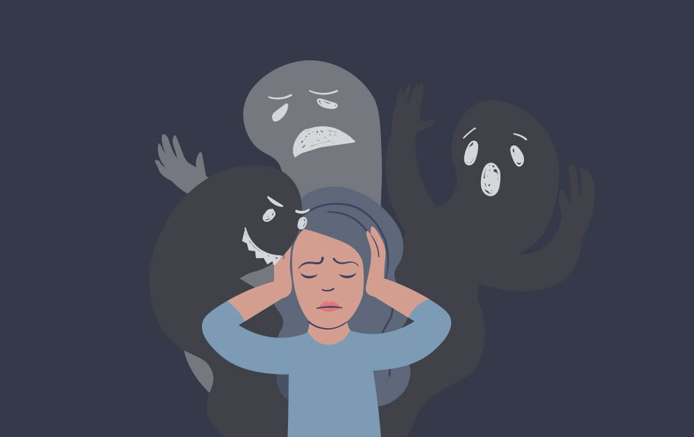

La salud mental se refiere al bienestar emocional, psicológico y social de una persona. Incluye la forma en que pensamos, sentimos, actuamos y nos relacionamos con los demás. La importancia de la salud mental en la actualidad radica en varios aspectos:
1. Bienestar general: Una buena salud mental contribuye significativamente al bienestar general de una persona. Nos permite enfrentar los desafíos de la vida, manejar el estrés, establecer relaciones saludables y disfrutar de una vida satisfactoria.
2. Productividad y rendimiento: La salud mental influye en nuestra capacidad para concentrarnos, tomar decisiones, resolver problemas y desempeñarnos eficazmente en nuestras responsabilidades laborales, académicas y cotidianas.
3. Resiliencia: La salud mental nos ayuda a desarrollar resiliencia, es decir, la capacidad de recuperarnos de situaciones estresantes, traumas o adversidades. Nos permite adaptarnos a los cambios, superar obstáculos y seguir adelante en la vida.
4. Relaciones interpersonales: Una buena salud mental facilita la construcción y el mantenimiento de relaciones saludables con familiares, amigos, colegas y otras personas en nuestra vida. Contribuye a una comunicación más efectiva, empatía y apoyo mutuo.
5. Prevención de enfermedades físicas: Existe una estrecha relación entre la salud mental y la salud física. El estrés crónico y los trastornos mentales pueden aumentar el riesgo de desarrollar enfermedades como enfermedades cardiovasculares, diabetes y problemas inmunológicos.
6. Reducción del estigma: Promover la salud mental ayuda a reducir el estigma y la discriminación asociados con los trastornos mentales. Alentar la apertura y la comprensión sobre los problemas de salud mental fomenta un entorno de apoyo y aceptación.
Las enfermedades mentales son trastornos que afectan el pensamiento, el estado de ánimo y el comportamiento de una persona. Algunas de las enfermedades mentales más comunes incluyen:
Trastornos de ansiedad: Incluyen trastorno de ansiedad generalizada (TAG), trastorno de pánico, trastorno obsesivo-compulsivo (TOC), fobias específicas y trastorno de estrés postraumático (TEPT). Provocan sentimientos intensos de miedo, preocupación y ansiedad que pueden interferir significativamente en la vida diaria.
Depresión: La depresión es un trastorno del estado de ánimo caracterizado por sentimientos persistentes de tristeza, desesperanza, falta de interés o placer en actividades cotidianas. Puede afectar la forma en que una persona piensa, siente y maneja las actividades diarias.
Trastorno bipolar: Se caracteriza por cambios extremos en el estado de ánimo, que incluyen períodos de manía (euforia extrema, irritabilidad, comportamiento impulsivo) y períodos de depresión.
Trastornos alimenticios: Incluyen anorexia nerviosa, bulimia nerviosa y trastorno por atracón. Se caracterizan por una preocupación obsesiva por el peso, la comida y la imagen corporal, y pueden tener graves repercusiones en la salud física y emocional.
Esquizofrenia: Es un trastorno mental grave que afecta la percepción, el pensamiento, las emociones y el comportamiento de una persona. Puede causar alucinaciones, delirios, pensamiento desorganizado y dificultad para concentrarse o prestar atención.
Trastorno por déficit de atención e hiperactividad (TDAH): Se caracteriza por la dificultad para mantener la atención, controlar los impulsos y regular el comportamiento. Puede afectar el rendimiento académico, laboral y las relaciones interpersonales.
Estos son solo algunos ejemplos de enfermedades mentales comunes, pero existen muchos otros trastornos que pueden afectar la salud mental de una persona. Es importante buscar ayuda profesional si experimentas síntomas de cualquier trastorno mental, ya que el tratamiento adecuado puede mejorar significativamente la calidad de vida. Para eso dejamos unas lineas de atencion que te pueden ayudar:
Aquí encontrarás una lista de números de teléfono de líneas de atención en salud fisica y mental, no dudes en llamar.
| Línea de Atención | Número de Teléfono |
|---|---|
| Línea 106 | 300 754 8933 |
| Línea de la Vida | 800 911 2000 |
| Línea diversa | 310 864 4214 |
| Línea Psicoactiva | 01 8000 112 439 |